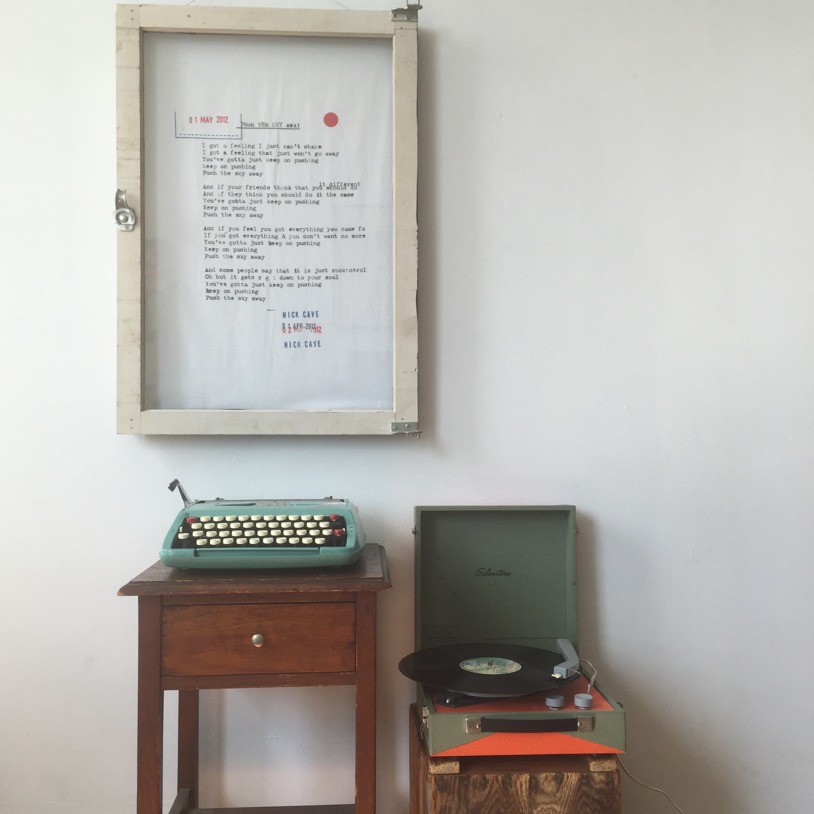

Welcome. This is my story of music.
You are not going to find any reviews here. Nor will you find any Numbers or Letters assigning a grade to a particular album.
Instead you will find a person who loves music & to write.
This the story of my life told through albums 52 Albums
At the start of 2015 I bought an album from 1963. The next week I bought an album from 1964. On the final week of 2015 I will by an album from 2015
Each week I will be writing about the album I purchase and how it relates to my life.
You can start from the begining by heading to Story
Along side these storys or Chapters of my life, there are some other things happening here as well.
Head over to Last Week in Music to find about some of the things I have been listening to currently and concerts I have been checking out
Mixes has some mixtapes that I have maded. Usually relating to some of the Chapters from the Story section
Head over to the Author Section if you'd like to find me